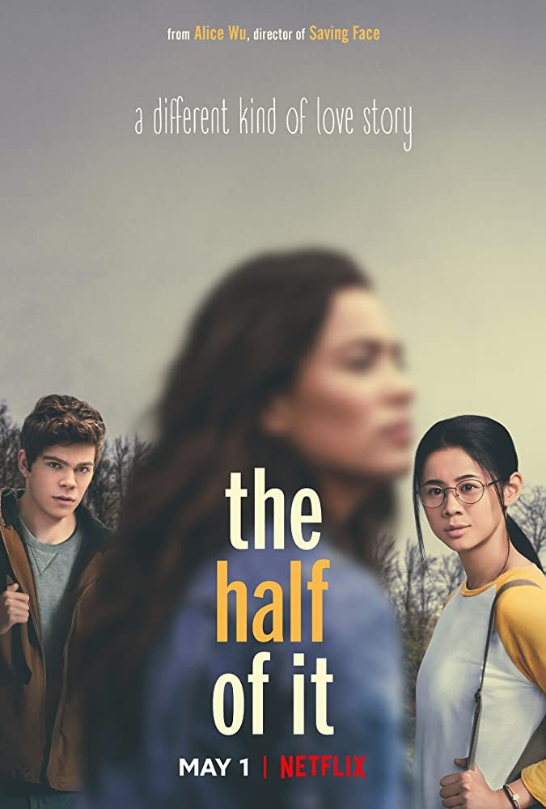

▲ 영화 '첫 키스만 50번째'
'당신에게 매일매일 최고의 하루만을 선물할게요. 그게 내가 당신을 사랑하는 방식입니다.' - 지용
▲ 영화 '먼 훗날 우리'
'만약이라는 의미 없는 가정들이 한없이 쌓이고, 그때를 곱씹어 보지만 시간이라는 간극을 메울 수는 없다. 함께할 수는 없지만 영원히 널 사랑한다고 말하는, 세상엔 이런 사랑도 있다.' - 치즈팝콘
▲ 영화 '비포 위 고'
'당신이 사랑하는 사람이 당신의 사랑법을 멋대로 정하게 두어서는 안 된다.' - 비포 위 고 中에서
▲ 영화 '반쪽의 이야기'
'사랑은 괜찮게 그린 그림을 기꺼이 망치는 거예요. 훌륭한 걸 그릴 기회를 위해서.' - 성유
<